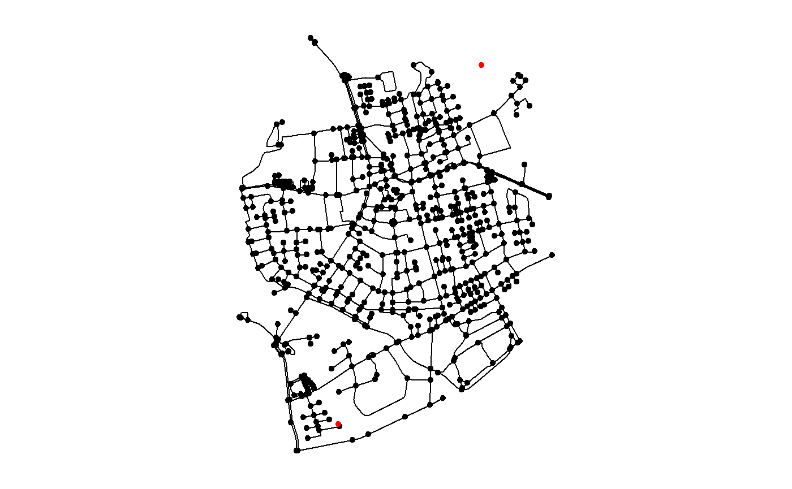
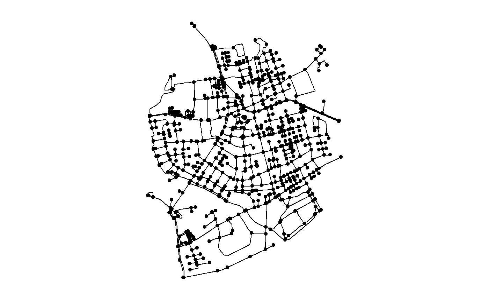
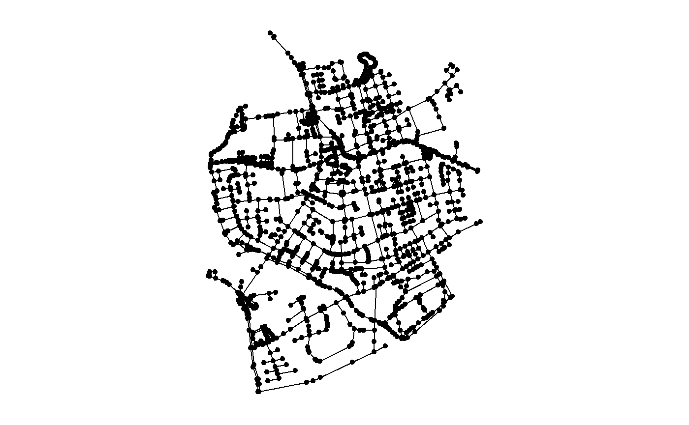
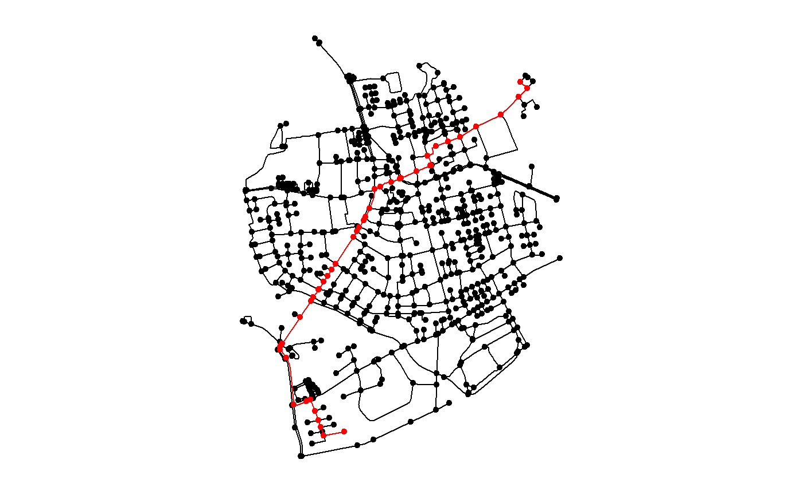

The core of the package is a data structure that can be provided directly to both graph analytical functions of tidygraph and spatial analytical functions of sf. However, there might be problems that are so specific to spatial networks, that they can neither be solved by tidygraph nor sf. Therefore, sfnetworks contains several extensions to the current offer of the two “parent packages”. We want to prevent that sfnetworks goes too much into a single application - it should remain a lower-level package - but basic, widely used spatial network operations should be supported. The ones that are currently supported are presented in this vignette.
The tidygraph package has a very organized structure, in which it offers a wide range of algorithms for extracting information about either the graph itself, its nodes, or its edges. Think for example about centrality measures (e.g. centrality_betweenness), other node, edge or graph measures (e.g. node_eccentricity, graph_diameter) and node, edge or graph type queries (e.g. node_is_center, edge_is_loop, graph_is_connected).
The sfnetworks package extends this ecosystem by adding specific spatial algorithms. In the current state, the offer contains three spatial edge measures:
edge_length: The length of an edge linestring geometry as calculated by st_length.edge_straight_length: The straight-line distance (i.e. euclidean distance for projected coordinates, and great-circle-distance for geographic coordinates) between the two boundary nodes of an edge, as calculated by st_distance.edge_circuity: The ratio of the length of an edge linestring geometry versus the straight-line distance between its boundary nodes, as described in Giacomin & Levinson, 2015.Just as with all tidygraph algorithms, spatial edge measures are meant to be called inside tidygraph verbs such as mutate(), where the graph that is currently being worked on is known and thus not needed as an argument to the function.
library(sfnetworks) library(sf) #> Warning: package 'sf' was built under R version 4.0.2 library(tidygraph)
net = as_sfnetwork(roxel, directed = FALSE) %>% st_transform(3035) net %>% activate("edges") %>% mutate( length = edge_length(), straight = edge_straight_length(), circuity = edge_circuity() ) %>% select(length, straight, circuity)
#> # An sfnetwork with 701 nodes and 851 edges
#> #
#> # CRS: EPSG:3035
#> #
#> # An undirected multigraph with 14 components with spatially explicit edges
#> #
#> # Edge Data: 851 x 6 (active)
#> # Geometry type: LINESTRING
#> # Dimension: XY
#> # Bounding box: xmin: 4150707 ymin: 3206375 xmax: 4152367 ymax: 3208565
#> from to geometry length straight circuity
#> <int> <int> <LINESTRING [m]> [m] [m] [1]
#> 1 1 2 (4151491 3207923, 4151474 3207946) 28.859~ 28.859~ 1.000000
#> 2 3 4 (4151398 3207777, 4151390 3207727, 415~ 107.714~ 107.082~ 1.005894
#> 3 5 6 (4151408 3207539, 4151417 3207573, 415~ 54.367~ 54.341~ 1.000471
#> 4 7 8 (4151885 3206698, 4151861 3206711, 415~ 155.223~ 153.908~ 1.008540
#> 5 9 10 (4151732 3207017, 4151721 3206809) 208.682~ 208.682~ 1.000000
#> 6 11 12 (4152152 3206984, 4152143 3206932, 415~ 63.028~ 61.708~ 1.021397
#> # ... with 845 more rows
#> #
#> # Node Data: 701 x 1
#> # Geometry type: POINT
#> # Dimension: XY
#> # Bounding box: xmin: 4150707 ymin: 3206375 xmax: 4152367 ymax: 3208565
#> geometry
#> <POINT [m]>
#> 1 (4151491 3207923)
#> 2 (4151474 3207946)
#> 3 (4151398 3207777)
#> # ... with 698 more rows
If you want to use an algorithm outside of a verb you can use with_graph() to set the graph context temporarily.
circuities = with_graph(activate(net, "edges"), edge_circuity()) head(circuities) #> Units: [1] #> [1] 1.000000 1.005894 1.000471 1.008540 1.000000 1.021397
sfnetworks also offers spatial wrappers around the shortest path calculation functionalities from igraph. The spatial wrappers all start with st_, just as the spatial analytical functions from the sf packages. Instead of providing the node indices of the from and to nodes of the shortest path, it is possible to provide sf-formatted points in geographical space instead.
Providing node indices:
st_shortest_paths(net, 1, 9)$vpath #> [[1]] #> + 17/701 vertices, from edb068c: #> [1] 1 644 579 260 164 208 426 424 533 657 512 506 111 524 292 167 9
Providing the same nodes as spatial points instead:
#> Simple feature collection with 1 feature and 0 fields
#> geometry type: POINT
#> dimension: XY
#> bbox: xmin: 4151491 ymin: 3207923 xmax: 4151491 ymax: 3207923
#> projected CRS: ETRS89-extended / LAEA Europe
#> # A tibble: 1 x 1
#> geometry
#> <POINT [m]>
#> 1 (4151491 3207923)
#> Simple feature collection with 1 feature and 0 fields
#> geometry type: POINT
#> dimension: XY
#> bbox: xmin: 4151732 ymin: 3207017 xmax: 4151732 ymax: 3207017
#> projected CRS: ETRS89-extended / LAEA Europe
#> # A tibble: 1 x 1
#> geometry
#> <POINT [m]>
#> 1 (4151732 3207017)
st_shortest_paths(net, p1, p2)$vpath #> [[1]] #> + 17/701 vertices, from edb068c: #> [1] 1 644 579 260 164 208 426 424 533 657 512 506 111 524 292 167 9
In the case above, the locations of these spatial points are exactly equal to the locations of nodes in the network. However, they don’t have to be. Points that don’t lie on the network will be replaced by their nearest node.
p3 = st_sfc( st_geometry(p1)[[1]] + st_point(c(500, 500)), crs = st_crs(p1) ) p4 = st_sfc( st_geometry(p2)[[1]] + st_point(c(-500, -500)), crs = st_crs(p2) ) par(mar = c(1, 1, 1, 1)) plot(net) plot(p3, col = "red", pch = 20, add = TRUE) plot(p4, col = "red", pch = 20, add = TRUE)

lengths(st_intersects(p3, net)) > 0 #> [1] FALSE lengths(st_intersects(p4, net)) > 0 #> [1] FALSE st_shortest_paths(net, p3, p4)$vpath #> [[1]] #> + 36/701 vertices, from edb068c: #> [1] 178 179 601 121 120 700 691 635 636 588 260 164 208 426 424 533 657 512 506 #> [20] 111 524 292 167 9 10 168 496 495 485 162 628 242 493 240 157 158
All paths above are calculated without taking into account weights of edges. Just as in igraph::shortest_paths, you can provide such weights through the weights argument. However, in st_shortest_path you also have the option to just provide a column name to the weights argument, which should match an existing column in the networks edges table, whose values will then be used as weights.
#> # An sfnetwork with 701 nodes and 851 edges
#> #
#> # CRS: EPSG:3035
#> #
#> # An undirected multigraph with 14 components with spatially explicit edges
#> #
#> # Edge Data: 851 x 6 (active)
#> # Geometry type: LINESTRING
#> # Dimension: XY
#> # Bounding box: xmin: 4150707 ymin: 3206375 xmax: 4152367 ymax: 3208565
#> from to name type geometry length
#> <int> <int> <fct> <fct> <LINESTRING [m]> [m]
#> 1 1 2 Havixbeck~ reside~ (4151491 3207923, 4151474 3207946) 28.859~
#> 2 3 4 Pienersal~ second~ (4151398 3207777, 4151390 3207727, 41~ 107.714~
#> 3 5 6 Schulte-B~ reside~ (4151408 3207539, 4151417 3207573, 41~ 54.367~
#> 4 7 8 NA path (4151885 3206698, 4151861 3206711, 41~ 155.223~
#> 5 9 10 Welsinghe~ reside~ (4151732 3207017, 4151721 3206809) 208.682~
#> 6 11 12 NA footway (4152152 3206984, 4152143 3206932, 41~ 63.028~
#> # ... with 845 more rows
#> #
#> # Node Data: 701 x 1
#> # Geometry type: POINT
#> # Dimension: XY
#> # Bounding box: xmin: 4150707 ymin: 3206375 xmax: 4152367 ymax: 3208565
#> geometry
#> <POINT [m]>
#> 1 (4151491 3207923)
#> 2 (4151474 3207946)
#> 3 (4151398 3207777)
#> # ... with 698 more rows
st_shortest_paths(net, p1, p2, weights = "length")$vpath #> [[1]] #> + 17/701 vertices, from edb068c: #> [1] 1 645 481 263 164 208 426 424 533 657 512 506 111 524 292 167 9
Alternatively, you can name your weights column weight. That is the same as having a weight attribute in an igraph object. The weight values will then be automatically detected and do not have to be provided explicitly.
net = net %>% activate("edges") %>% rename(weight = length) %>% activate("nodes") st_shortest_paths(net, p1, p2)$vpath #> [[1]] #> + 17/701 vertices, from edb068c: #> [1] 1 645 481 263 164 208 426 424 533 657 512 506 111 524 292 167 9
We now showed 1-to-1 shortest paths. You can also calculate 1-to-many shortest paths, by giving a multiple feature sf or sfc object as to argument. Having multiple features as from argument is not possible in this case (since igraph does not support it).
Having multiple features as from argument ìs possible in st_network_distance(), which is a wrapper around igraph::distances. This returns a distance matrix.
ps1 = c(st_geometry(p1), st_sfc(p3)) ps1 #> Geometry set for 2 features #> geometry type: POINT #> dimension: XY #> bbox: xmin: 4151491 ymin: 3207923 xmax: 4151991 ymax: 3208423 #> projected CRS: ETRS89-extended / LAEA Europe #> POINT (4151491 3207923) #> POINT (4151991 3208423) ps2 = c(st_geometry(p2), st_sfc(p4)) ps2 #> Geometry set for 2 features #> geometry type: POINT #> dimension: XY #> bbox: xmin: 4151232 ymin: 3206517 xmax: 4151732 ymax: 3207017 #> projected CRS: ETRS89-extended / LAEA Europe #> POINT (4151732 3207017) #> POINT (4151232 3206517) # Note that our net object now has a weight column which will be automatically used. st_network_distance(net, ps1, ps2) #> [,1] [,2] #> [1,] 1040.299 1948.543 #> [2,] 1763.122 2792.150
Finally, there is also st_all_shortest_paths(), which is a wrapper around igraph::all_shortest_paths. It works the same as st_shortest_paths(), but in case there are multiple shortest paths from A to B, it will return all of them, instead of only one.
Note: if you provide points that are not network nodes, the nearest node to those points will be taken. We would like to also give the option to take the nearest point on the nearest edge. See here
Before we get to the spatial morphing extensions, we need to shortly introduce the concept. Morphing is a tidygraph functionality to morph a graph into a different representation. Then, any of the supported dplyr verbs can be applied to this morphed graph (which sub-classes a list), and changes to the data are merged back into the original graph when calling unmorph(). A “different representation of a graph” sounds like a broad term, and it is! A large amount of morphing functions are offered by tidygraph, and they all work on sfnetwork objects as well. See the tidygraph documentation for an overview of all of them, and more details on the morphing concept.
Lets look at an example, in which we morph a graph into a representation where all its components are a graph on its own, combined together in a list structure. Since net has 14 components, the morphed representation is a list with 14 elements.
# Mutate will be applied to each component separately. net %>% morph(to_components) %>% mutate(is_comp_center = node_is_center()) %>% unmorph() %>% filter(is_comp_center)
#> # An sfnetwork with 27 nodes and 13 edges
#> #
#> # CRS: EPSG:3035
#> #
#> # An unrooted forest with 14 trees with spatially explicit edges
#> #
#> # Node Data: 27 x 2 (active)
#> # Geometry type: POINT
#> # Dimension: XY
#> # Bounding box: xmin: 4150894 ymin: 3206493 xmax: 4152033 ymax: 3208245
#> geometry is_comp_center
#> <POINT [m]> <lgl>
#> 1 (4150894 3207618) TRUE
#> 2 (4150900 3207592) TRUE
#> 3 (4151123 3206503) TRUE
#> 4 (4151065 3206493) TRUE
#> 5 (4151970 3207214) TRUE
#> 6 (4151986 3207186) TRUE
#> # ... with 21 more rows
#> #
#> # Edge Data: 13 x 6
#> # Geometry type: LINESTRING
#> # Dimension: XY
#> # Bounding box: xmin: 4150894 ymin: 3206493 xmax: 4152033 ymax: 3208245
#> from to name type geometry weight
#> <int> <int> <fct> <fct> <LINESTRING [m]> [m]
#> 1 1 2 Stellmacherweg resident~ (4150894 3207618, 4150900 3207~ 26.62661
#> 2 3 4 Lise-Meitner-S~ resident~ (4151123 3206503, 4151065 3206~ 58.68811
#> 3 5 6 NA service (4151970 3207214, 4151986 3207~ 32.03462
#> # ... with 10 more rows
The crystallise() verb will turn a morphed graph into a tibble, where each row represents one of the elements of the list, which the corresponding graph object stored in a column named graph. Alternatively, the convert() verb takes one element of the list, and returns the graph stored in that element. For example, convert(net, to_components, .select = 1) will convert the first (and largest) component of our network. A lot of morphers create a list with only a single element. In that case, the .select argument of convert() can be left out, since the only graph of the morphed representation will always be returned.
Now, lets move on to the spatial morphers, that sfnetworks adds to the exsting set of tidygraphs offer. All spatial morpher functions start with to_spatial_, to distinguish them for the others. Just as in tidygraph, morphers are only meant to be called inside either morph() or convert() verbs, and not to be applied to the graph directly.
The following spatial morphers are currently offered by sfnetwork:
to_spatial_coordinates drops the geometry list column of the edges (if present), and represents the node geometries with an X and Y column, instead of a geometry list column.
net %>% convert(to_spatial_coordinates)
#> # A tbl_graph: 701 nodes and 851 edges
#> #
#> # An undirected multigraph with 14 components
#> #
#> # Node Data: 701 x 3 (active)
#> .tidygraph_node_index X Y
#> <int> <dbl> <dbl>
#> 1 1 4151491. 3207923.
#> 2 2 4151474. 3207946.
#> 3 3 4151398. 3207777.
#> 4 4 4151370. 3207673.
#> 5 5 4151408. 3207539.
#> 6 6 4151421. 3207592.
#> # ... with 695 more rows
#> #
#> # Edge Data: 851 x 6
#> from to name type weight .tidygraph_edge_index
#> <int> <int> <fct> <fct> [m] <int>
#> 1 1 2 Havixbecker Strasse residential 28.85977 1
#> 2 3 4 Pienersallee secondary 107.71403 2
#> 3 5 6 Schulte-Bernd-Strasse residential 54.36729 3
#> # ... with 848 more rows
to_spatial_dense_graph reconstruct the network by using all edge linestring points as nodes, instead of only the endpoints.
plot(net) plot(convert(net, to_spatial_dense_graph)) #> Warning in st_cast.sf(edges, "POINT"): repeating attributes for all sub- #> geometries for which they may not be constant

to_spatial_directed makes a graph directed in the direction given by the linestring geometries of the edges. This in contradiction to the to_directed morpher of tidygraph, which makes a graph directed in the direction given by the to and from column.
net %>% activate("edges") %>% st_reverse() %>% convert(to_spatial_directed) #> Warning in st_reverse.sfnetwork(.): For undirected networks st_reverse has no #> effect on columns 'to' and 'from'
#> # An sfnetwork with 701 nodes and 851 edges
#> #
#> # CRS: EPSG:3035
#> #
#> # A directed multigraph with 14 components with spatially explicit edges
#> #
#> # Edge Data: 851 x 7 (active)
#> # Geometry type: LINESTRING
#> # Dimension: XY
#> # Bounding box: xmin: 4150707 ymin: 3206375 xmax: 4152367 ymax: 3208565
#> from to name type geometry weight .tidygraph_edge~
#> <int> <int> <fct> <fct> <LINESTRING [m]> [m] <int>
#> 1 2 1 Havix~ resid~ (4151474 3207946, 4151491~ 28.859~ 1
#> 2 4 3 Piene~ secon~ (4151370 3207673, 4151390~ 107.714~ 2
#> 3 6 5 Schul~ resid~ (4151421 3207592, 4151417~ 54.367~ 3
#> 4 8 7 NA path (4151762 3206789, 4151771~ 155.223~ 4
#> 5 10 9 Welsi~ resid~ (4151721 3206809, 4151732~ 208.682~ 5
#> 6 12 11 NA footw~ (4152147 3206923, 4152143~ 63.028~ 6
#> # ... with 845 more rows
#> #
#> # Node Data: 701 x 2
#> # Geometry type: POINT
#> # Dimension: XY
#> # Bounding box: xmin: 4150707 ymin: 3206375 xmax: 4152367 ymax: 3208565
#> geometry .tidygraph_node_index
#> <POINT [m]> <int>
#> 1 (4151491 3207923) 1
#> 2 (4151474 3207946) 2
#> 3 (4151398 3207777) 3
#> # ... with 698 more rows
to_spatial_implicit_edges drops the geometries of spatially explicit edges.
net %>% convert(to_spatial_implicit_edges)
#> # An sfnetwork with 701 nodes and 851 edges
#> #
#> # CRS: EPSG:3035
#> #
#> # An undirected multigraph with 14 components with spatially implicit edges
#> #
#> # Node Data: 701 x 2 (active)
#> # Geometry type: POINT
#> # Dimension: XY
#> # Bounding box: xmin: 4150707 ymin: 3206375 xmax: 4152367 ymax: 3208565
#> geometry .tidygraph_node_index
#> <POINT [m]> <int>
#> 1 (4151491 3207923) 1
#> 2 (4151474 3207946) 2
#> 3 (4151398 3207777) 3
#> 4 (4151370 3207673) 4
#> 5 (4151408 3207539) 5
#> 6 (4151421 3207592) 6
#> # ... with 695 more rows
#> #
#> # Edge Data: 851 x 6
#> from to name type weight .tidygraph_edge_index
#> <int> <int> <fct> <fct> [m] <int>
#> 1 1 2 Havixbecker Strasse residential 28.85977 1
#> 2 3 4 Pienersallee secondary 107.71403 2
#> 3 5 6 Schulte-Bernd-Strasse residential 54.36729 3
#> # ... with 848 more rows
to_spatial_explicit_edges draws straight linestring geometries between the to and from nodes of spatially implicit edges.
#> # An sfnetwork with 701 nodes and 851 edges
#> #
#> # CRS: EPSG:3035
#> #
#> # An undirected multigraph with 14 components with spatially explicit edges
#> #
#> # Node Data: 701 x 2 (active)
#> # Geometry type: POINT
#> # Dimension: XY
#> # Bounding box: xmin: 4150707 ymin: 3206375 xmax: 4152367 ymax: 3208565
#> geometry .tidygraph_node_index
#> <POINT [m]> <int>
#> 1 (4151491 3207923) 1
#> 2 (4151474 3207946) 2
#> 3 (4151398 3207777) 3
#> 4 (4151370 3207673) 4
#> 5 (4151408 3207539) 5
#> 6 (4151421 3207592) 6
#> # ... with 695 more rows
#> #
#> # Edge Data: 851 x 7
#> # Geometry type: LINESTRING
#> # Dimension: XY
#> # Bounding box: xmin: 4150707 ymin: 3206375 xmax: 4152367 ymax: 3208565
#> from to name type weight .tidygraph_edge~ geometry
#> <int> <int> <fct> <fct> [m] <int> <LINESTRING [m]>
#> 1 1 2 Havixb~ resid~ 28.859~ 1 (4151491 3207923, 415147~
#> 2 3 4 Piener~ secon~ 107.714~ 2 (4151398 3207777, 415137~
#> 3 5 6 Schult~ resid~ 54.367~ 3 (4151408 3207539, 415142~
#> # ... with 848 more rows
to_spatial_subgraph limits a graph to a single spatial subset. … is evaluated in the same manner as st_filter.
e1 = st_point(c(7.53173, 51.95662)) e2 = st_point(c(7.53173, 51.95190)) e3 = st_point(c(7.53778, 51.95190)) e4 = st_point(c(7.53778, 51.95662)) rect = st_multipoint(c(e1, e2, e3, e4)) %>% st_cast('POLYGON') %>% st_sfc(crs = 4326) %>% st_transform(3035) net %>% convert(to_spatial_subgraph, rect, .predicate = st_intersects) #> Subsetting by nodes
#> # An sfnetwork with 89 nodes and 104 edges
#> #
#> # CRS: EPSG:3035
#> #
#> # An undirected simple graph with 8 components with spatially explicit edges
#> #
#> # Node Data: 89 x 2 (active)
#> # Geometry type: POINT
#> # Dimension: XY
#> # Bounding box: xmin: 4151344 ymin: 3207528 xmax: 4151757 ymax: 3208041
#> geometry .tidygraph_node_index
#> <POINT [m]> <int>
#> 1 (4151491 3207923) 1
#> 2 (4151474 3207946) 2
#> 3 (4151398 3207777) 3
#> 4 (4151370 3207673) 4
#> 5 (4151408 3207539) 5
#> 6 (4151421 3207592) 6
#> # ... with 83 more rows
#> #
#> # Edge Data: 104 x 7
#> # Geometry type: LINESTRING
#> # Dimension: XY
#> # Bounding box: xmin: 4151348 ymin: 3207539 xmax: 4151757 ymax: 3208041
#> from to name type geometry weight .tidygraph_edge~
#> <int> <int> <fct> <fct> <LINESTRING [m]> [m] <int>
#> 1 1 2 Havix~ resid~ (4151491 3207923, 4151474~ 28.859~ 1
#> 2 3 4 Piene~ secon~ (4151398 3207777, 4151390~ 107.714~ 2
#> 3 5 6 Schul~ resid~ (4151408 3207539, 4151417~ 54.367~ 3
#> # ... with 101 more rows
to_spatial_shortest_paths limits a graph to those nodes and edges that are part of the shortest path between two nodes. If multiple to nodes are given, multiple shortest path graphs are returned.
net %>% convert(to_spatial_shortest_paths, p3, p4)
#> # An sfnetwork with 45 nodes and 44 edges
#> #
#> # CRS: EPSG:3035
#> #
#> # An unrooted tree with spatially explicit edges
#> #
#> # Node Data: 45 x 2 (active)
#> # Geometry type: POINT
#> # Dimension: XY
#> # Bounding box: xmin: 4150901 ymin: 3206483 xmax: 4152196 ymax: 3208337
#> geometry .tidygraph_node_index
#> <POINT [m]> <int>
#> 1 (4151398 3207777) 3
#> 2 (4151370 3207673) 4
#> 3 (4151845 3208048) 28
#> 4 (4151929 3208104) 29
#> 5 (4151317 3207574) 63
#> 6 (4151063 3207188) 67
#> # ... with 39 more rows
#> #
#> # Edge Data: 44 x 7
#> # Geometry type: LINESTRING
#> # Dimension: XY
#> # Bounding box: xmin: 4150901 ymin: 3206483 xmax: 4152196 ymax: 3208337
#> from to name type geometry weight .tidygraph_edge~
#> <int> <int> <fct> <fct> <LINESTRING [m]> [m] <int>
#> 1 1 2 Piene~ secon~ (4151398 3207777, 4151390~ 107.7140 2
#> 2 3 4 Brede~ resid~ (4151845 3208048, 4151929~ 100.6086 16
#> 3 4 8 Brede~ resid~ (4152058 3208166, 4152050~ 143.4495 74
#> # ... with 41 more rows
This morpher can be very useful for plotting shortest paths on top of the original graph.

Or, for calculating the lengths of multiple shortest paths.